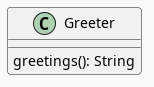

Cucumber and Ecma Script Modules (ESM) In a Nikola Post
Table of Contents
What Is This, Then?
This is a re-do of the cucumber.js example testing for JavaScript/ECMAScript Modules (ESM). Just copying the files exactly as they're given in the cucumber.js github repository works pretty much without problem, but since I'm doing this messy thing with writing javascript in these blog posts instead of as part of a code-project, it took a little more work than I would have liked.
I had previously tried to get ESM modules to work with mocha but gave up and went back to using the CommonJS syntax instead (which I just read is meant to work outside the brouwser and not in it, which explains some of the trouble I ran into). This time I seem to have gotten the ESM style of modules working with cucumber.js, but it \(\textit{is}\) a bit convoluted and maybe not really a good idea to do it this way. So here we go.
Setting Up
The cucumber.js page has instructions on installing it, so I won't go over it. It's mostly just npm install cucumber --save-dev. I seem to remember that they said somewhere not to install it globally, but I can't remember now where I saw it. Once I installed it, I had to edit a couple of files to get it working the way I wanted it to.
The Cucumber.js Configuration
cucumber.js uses a configuration file named… cucumber.js that you put where you run the tests. I'm going to put cucumber test-files into folders whose names will have the form test-<slug>, where slug is the slug for the post where I define the javascript and tests in, so in order to get cucumber to find them, I need to change the glob in the import line to match.
export default {
import: ['test*/**/*.js'],
publishQuiet: true
}
This file is using the ESM syntax (using an export statement) instead of the CJS form of setting module.export. We're going to have to make all the code match the ESM form, mixing and matching causes cucumber to crash throwing errors saying it was expecting an ESM module.
The Testing package.json
Next we need a package.json file next to the cucumber.js file. There's two changes I made.
"type": "module"tells cucumber (or node?) that we'll be using ESM, not CJS- I'm running it with nodemon so the "test" attribute gets the command to run and its arguments.
{
"type": "module",
"private": true,
"scripts": {
"test": "nodemon --watch . --exec cucumber-js ./test*"
},
"devDependencies": {
"@cucumber/cucumber": "^9.1.2",
"chai": "^4.3.7"
}
}
I had previously installed chai globally and it was working with mocha but for mysterious reasons this time I got a "Module not found" error (maybe because I installed cucumber locally) so I installed it locally too.
So far, this is what I've edited in the testing directory.
cucumber.js package.json
There's also a package-lock.json and node_modules/ which were created as part of installing cucumber and chai but I don't touch those.
Now that we have this setup we can run the test-runner using npm.
npm test
Cucumber runs once and then will re-run the testing every time we make a change to our files. I'm not sure how the magic gets done but it even detects when I make changes to the javascript being tested after I moved it outside of the testing folder.
The Test Files
The slug for this post is cucumber-and-ecma-script-modules-esm so the testing files are going into a folder named test-cucumber-and-ecma-script-modules-esm which sits next to the cucumber.js files and the package.json files that I just mentioned.
The Feature File
We're going to make a Greeter class that does one thing: greets users. Cucumber will look for files that have the .feature file extension and parse the keywords to figure out what tests to expect. Here's the one for our greeter (in the file greetings.feature).
Feature: Greeting
Scenario: The Greeter Greets
Given a greeter
When the greeter greets me
Then I should hear "Go away."
The Test Steps
Now that we have a feature file we have to write the tests that match it. In our feature file we used three special keywords - Given, When and Then - which have to match functions in our test file to pass the cucumber tests, which I'll put in a file called steps.js. In the example code they put it in a folder named steps, which makes sense if you have more than one folder but this'll do for now.
The Imports
These are the ESM style imports. The Greeter import statement is long because it's in a file accessible to this post rather than being next to the test-code so I have to pass in the path relative to where the steps.js file is.
import { expect } from "chai";
import { Given, When, Then } from "@cucumber/cucumber";
import { Greeter } from "../../../files/posts/cucumber-and-ecma-script-modules-esm/greetings.js";
Given
Our given function just creates a Greeter instance. There are also functions like Before and BeforeAll that let you do something once befare each Scenario (or all Scenarios), but we only have one scenario and it sounds clearer to me to say "Given a greeter…".
Given("a greeter", function() {
this.greeter = new Greeter();
});
When
Our when calls the greetings method and saves the output so we can check it in our Then function.
When("the greeter greets me", function () {
this.is_what_i_heard = this.greeter.greetings();
});
Then
Our last function is interesting in that it uses what they call cucumber-expressions, which allow you to put types into the string definition to tell it what to look for in the feature definition so we don't have to set the exact value. In this case our feature file says Then I should hear "Go away." The end of the statement is in quotes so cucumber knows that it's a string so we can replace it with {string} when we define the function and cucumber will pass in the expected string as an argument to the function that we pass to the Then function. Then we can use the passed-in value rather than hard-coding the expected string into our test. In this case the parameter what_he_should_have_said will have the string "Go away." in it, extracted (without the quotes) from our feature file definition.
Then("I should hear {string}",
function (what_he_should_have_said) {
expect(this.is_what_i_heard).to.equal(what_he_should_have_said);
}
);
So far this is the basic structure of our testing folder (ignoring stuff that I didn't create or edit).
cucumber.js package.json test-cucumber-and-ecma-script-modules-esm/ greetings.feature steps.js
The Greeter
Based on our test, this is what our Greeter class should look like.

Now let's define the Greeter (the software under test). Initially, just to see if it worked, I put it next to the test files the way that the example did, but the point of this is to get the javascript into the post so we can work with P5, so its final resting place is in a file named greetings.js in the folder where nikola will look for files when I build the site.
class Greeter {
greetings() {
return "Go away.";
}
}
export { Greeter };
In order for the class-definition (or anything else we define) to be importable elsewhere we have to declare it exportable. In the example code they used the syntax:
export class Greeter {
when defining the class, but, as seems to be the way with javascript, there's multiple ways to do exports (and imports), each of which probably has some subtle different use, but which is more than I want to know about at this point, so I decided to settle on this syntax:
export { Greeter };
(making a separate export line at the bottom of the file) for two reasons:
- If you have multiple things to export you can put them all in the curly braces so it's in one statement instead of scattered around the file
- This leaves class definitions looking the same as they did before I decided to try messing with modules.
The Greeter package.json
This next bit took me a while to figure out. If you put the Greeter definition into a subfolder below where we're running the tests, it will recognize our greeter.js file as an ESM module just fine. But, if you move it into a folder outside our tests as I did, node (or cucumber) suddenly won't be able to tell that it's an ESM module.
It will helpfully tell you to change the file extension from .js to .mjs, which doesn't work, and offer you a different import syntax to use, which also doesn't work, and to tell you to put "type": "module" into the package.json file… which turns out to sort of be the answer.
If you look at the package.json I edited in the section above to run the tests you'll see that it already has the "type": "module" line in it, which I assume is why the tests were running before I moved greetings.js. But it turns out that to get the tests to recognize the greetings.js file as an ESM module once I moved it I also had to put a package.json file next to it that identified it as an ESM module. Like so:
{
"type": "module",
"private": true
}
I suppose, maybe it's a little like an __init__.py file in python that tells python to recognize a folder as a module (package?). Or maybe not. Anyway, going now and looking at the output of the tests - Hokey Shmokes, Bullwinkle! It works!
Now the Other Hard Part
Okay, so the testing is working now, but just running tests is sort of meaningless (no offense to testers), the real point of it all is to get the tested javascript back into this post and use it.
First Let's Setup the Sketch Tag
According to mozilla, <script> tags are assumed to be javascript if you don't set a MIME type (and so they tell you not to set the type argument if it's a regular script) but to let the browser know it's a module you have to set the attribute type="module" in the tag. I'm going to use a convoluted name for the actual p5 sketch file that I'm making, but for demonstration's sake let's pretend it's called sketch.js, then the HTML tag to include it in this post would look like this.
<script src="sketch.js" type="module"></script>
The Greeter class is going to be imported into our sketch module so we don't refer to it in the HTML.
Now Let's Use It
We'll import the Greeter into the sketch, setup the canvas, and then display the greeter's greetings on the canvas.
const GREETINGS_DIV = "db4ce169-greetings-sketch";
import { Greeter } from "./greetings.js"
function greetings_sketch(p5js) {
p5js.setup = function() {
p5js.createCanvas(175, 50);
p5js.background("gainsboro");
p5js.textSize(32);
p5js.fill(0, 103, 153);
let peter_the_greeter_says = new Greeter();
p5js.text(peter_the_greeter_says.greetings(), 10, 30);
p5js.noLoop();
};// setup
}; // greetings_sketch
new p5(greetings_sketch, GREETINGS_DIV);
And now, here's the sketch.
Impressed?
Just for completeness, the folder with the code for the post has these files in it.
greeter.js sketch.js package.json
What Have We Learned?
This was an exercise in seeing if I could get cucumber.js and ESM modules working. In particular it was about testing code that gets included in this post and used by p5. This was a pretty simple example, but it seems to work so I'll take it as a start that I can reference when going back to work with more complex p5 code.
Links
These are (mostly) referred to in the body of the post, and the body also has links not in here, but for future reference, this should be enough to get back up to speed.
- Cucumber.js [Internet]. Cucumber; 2023 [cited 2023 Jun 17]. Available from: https://github.com/cucumber/cucumber-js
- Cucumber-JS Examples [Internet]. Cucumber; 2023 [cited 2023 Jun 17]. Available from: https://github.com/cucumber/cucumber-js-examples
- ES modules: A cartoon deep-dive – Mozilla Hacks - the Web developer blog [Internet]. Mozilla Hacks – the Web developer blog. [cited 2023 Jun 19]. Available from: https://hacks.mozilla.org/2018/03/es-modules-a-cartoon-deep-dive
- JavaScript modules - JavaScript | MDN [Internet]. 2023 [cited 2023 Jun 19]. Available from: https://developer.mozilla.org/en-US/docs/Web/JavaScript/Guide/Modules
- CommonJS. In: Wikipedia [Internet]. 2023 [cited 2023 Jun 19]. Available from: https://en.wikipedia.org/w/index.php?title=CommonJS&oldid=1154931652